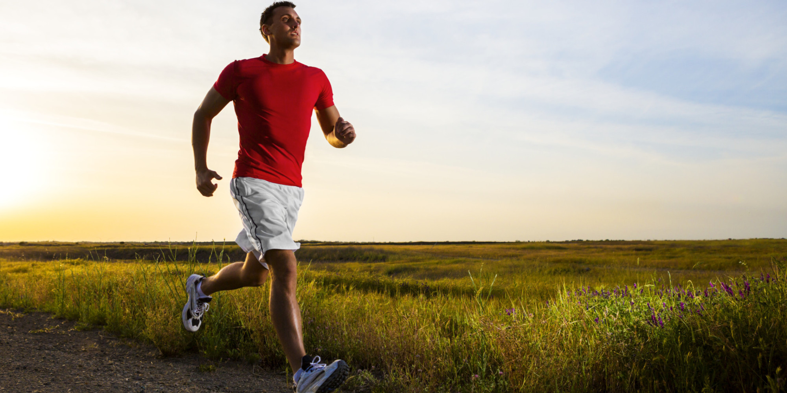
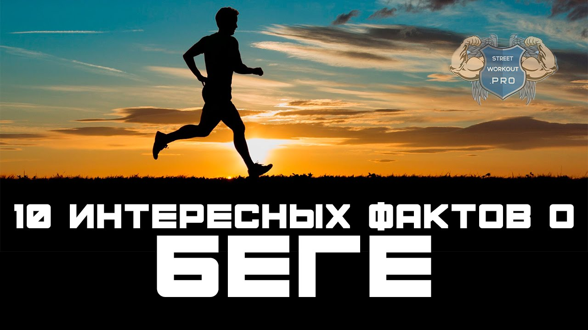

Марафон "Налибоки" 05-06.09.2020г. Бег, велосипед, мультимарафон.
 more_vert brightness_4 Тёмная тема выкл. chevron_right translate Выбрать язык chevron_right public Поехали! на связи chevron_right info Инфоцентр sms_failed Обратная связь arrow_back Назад Для более комфортного просмотра страниц в тёмное время суток или в слабоосвещённом помещении arrow_back Назад radio_button_checked Русский radio_button_unchecked English arrow_back Назад Facebook VK Instagram Telegram Барахолка Feed market Вход accessibility_new search menu Барахолка Форум Барахолка Форум arrow_back Соревнования и мероприятия
Марафон "Налибоки" 05-06.09.2020г. Бег, велосипед, мультимарафон.
visibility 32 081 Новое сообщение: Stanley H. Tweedle 24 Сен 23:35 arrow_downward notifications_active Подписаться share link Копировать ссылку Facebook VK Instagram ARF Автор
Крупнейшие любительские соревнования Беларуси!
В этом году крупнейший любительский старт Беларуси будет проходить 5 – 6 сентября. Дистанции: 21-42-100 км для бегунов, 42-100-200 км для велосипедистов и 80-150 км – мультимарафон (бег, велосипед, сплав).
С осени Федерация Приключенческих гонок – снова проводит соревнования в формате масс-стартов. В 12.00 в субботу, все участники (а обычно это +- 1500 человек) отправятся по маршрутам, проложенным в сердце Налибокской пущи. Старт на экостоянке вблизи деревни Белакорец.
Финиш – там же, и на финише - все участники получат памятную медаль.
Регистрация, подробности на сайте https://www.arf.by/
Мы регулярно публикуем новости, яркие фото с прошлых стартов и полезную информацию в наших соц.сетях ( https://www.facebook.com/pg/adventure.racing.federation, https://vk.com/arfby, https://www.instagram.com/arf.by/, https://t.me/arfby ) – выбирайте, что вам нравится больше и подписывайтесь!
2 favorite 16 Янв 21:59 Изменено 21 Июл 13:49 more_vert share Поделиться chevron_right reply Ответить chat Чат arrow_back Назад link Копировать ссылку Facebook VK InstagramНовости
19.08.2020
Друзья, мы знаем, многим сейчас не до спорта. Но мы продолжаем готовить «Марафон «Налибоки». Чтобы в конце пути у вас ждал светлый маячок финиша. Налибокская пуща это место, где можно перекрутить эмоции на обороты колес, втоптать негатив в грязные лесные тропинки, а потом мирно посидеть у костра рядом с близкими по духу людьми и поделится впечатлениями о #марафонНалибоки.
Очень важная новость – с учетом текущей экономической ситуации, мы приняли решение не поднимать размер стартового взноса (тот который установлен 24 марта) еще два дня – до 21 августа.
Так что торопитесь, если хотите сэкономить! Оплата взносов тут: https://bezkassira.by/12-jmarafonnaliboki20-8827/ Регистрация и «положение», тут: https://www.arf.by/
А дальше рассказ для той небольшой, но очень сильно влюблённой в спорт, группы участников, которые выбрали «мультиклассы». И фото «бубликов» - в дополнение к посту.
Дорогие участники мультимарафонов!
Нам не удалось в этом году договориться на приемлемую цену аренды байдарок для вас. Мы долго старались их для вас найти. И если вначале процесса Ковид нам помогал))) То сейчас байдарки – это дефицитнейший товар. Лодки забронированы до конца сентября. На них большой спрос. Так что у нас будет традиционный сплав на бубликах!!! Бублик, кто не знает, это накачанная автомобильная камера. Плюс весло, плюс ваша ловкость и много приключений!
Теперь детально рассказываем про схемы дистанций мульти.
Старт у вас общий вместе с Трейлами в 12:15.
Мультимарафон.
1 этап. Бег 22км – по трассе Трейл-полумарафона.
Транзитная зона – Центр соревнований.
2 этап. Сплав на бубликах 3км – вниз по течению)))) Выдаем: бублик + весло. Обязательно на себе ВАШ спас-жилет. По окончанию сплава бублики и весла оставляем волонтерам.
Транзитная зона – конец сплава. Забросок обуви нет! Бежать далее в том, в чем приплыли.
3 этап. Бег 1, 5км – возврат в Центр соревнований.
Транзитная зона – Центр соревнований.
4 этап. Велосипед – 47км – по трассе Веломарафона.
Транзитная зона - Пункт питания 2.
5 этап. Бег – 21км – отдельная трасса, частично совпадающая с трассой Веломарафона.
Транзитная зона - Пункт питания 2.
6 этап. Велосипед – 51км – по трассе Веломарафона.
Финиш.
Итого: Велосипед 96км, Бег – 44км, Сплав – 3км.
Мульти-полумарафон.
1 этап. Бег 22км – по трассе Трейл-полумарафона.
Транзитная зона – Центр соревнований.
2 этап. Велосипед – 43км – по трассе Вело-полумарафона.
Транзитная зона – Центр соревнований.
3 этап. Сплав на бубликах 3км – вниз по течению)))) Выдаем: бублик + весло. Обязательно на себе ВАШ спас-жилет. По окончанию сплава бублики и весла оставляем волонтерам.
Транзитная зона – конец сплава. Забросок обуви нет! Бежать далее в том, в чем приплыли.
4 этап. Бег 1, 5км – возврат в Центр соревнований.
Финиш.
Итого: Велосипед 43км, Бег – 24км, Сплав – 3км.
30.04.2020 Перенос марафона на 5-6 сентября.
Друзья, я вынужден рассказать, что марафон «Налибоки» впервые за 12 лет пройдет не в конце мая. Эта прекрасная традиция – встречать лето и встречаться большой и дружной компанией будет немного нарушена.
Ситуация с короновирусом на данный момент только ухудшается. И три недели – это недостаточный срок для заметного улучшения.
Налибоки – это не столько спорт, сколько наше с вами общение до марафона, на трассах, после финиша. И есть риск, что кто-то из нас с вами заразит друг друга. Это будет плохо. Так что давайте потерпим несколько месяцев и встретимся на Налибоках осенью.
5-6 СЕНТЯБРЯ – ЭТО НАША НОВАЯ ДАТА МАРАФОНА «НАЛИБОКИ».
Важный для многих вопрос - регистрация и стартовые взносы.
Отмена почти готового старта – это сложности и большие потери организатора. Но мы считаем, что это наш форс-мажор и он не должен затрагивать вас - участников.
Друзья, у вас есть 4 возможности по стартовым взносам.
1 вариант
Стартовый взнос, как и регистрация, автоматически переносятся на 5-6 сентября. Если вы хотите приехать на «Налибоки» в сентябре, то вам ничего не надо делать.
2 вариант
Вы можете вернуть 100% стартового взноса. В обычном порядке на сайте билетного оператора ( http://bezkassira.by/ ). Деньги вам вернут на карточку, с которой вы оплачивали. Процесс возврата у билетного оператора занимает до 14 рабочих дней. Возврат можно осуществить как прямо сейчас, так и в течении всего срока предварительной регистрации (до конца августа).
3 вариант
Если вы не готовы к переносу на осень, не знаете своих планов и решили вернуть стартовый взнос, но при этом, хотите нас поддержать в ситуации форс-мажора, то вы можете в момент возврата стартового взноса в поле для комментария указать % возврата (например, «возвратить 50%», или 70% и т.д.). Тогда часть стартового взноса останется нам для возмещения затрат на подготовку марафона и развитие Федерации.
favorite_border 16 Янв 21:59 Изменено 21 Авг 15:44 more_vert share Поделиться chevron_right reply Ответить chat Чат arrow_back Назад link Копировать ссылку Facebook VK InstagramЧаво - часто задаваемые вопросы
1. Один из самых часто задаваемых вопросов – в этом году – про ТРАНСФЕР.
Расписание есть в «Положение» https://www.arf.by/docs/2020/2020-naliboki-conditions.pdf
но для тех кто еще не прочитал (надеюсь, вы все же прочитаете, там много полезной информации) - рассказываем + уточняем детали.
Расписание.
Рейс туда (только одно время): Минск – Центр Соревнований, 5 сентября, отправление в 9.00.
Обратные рейсы (их два, в субботу и один в воскресенье): Центр Соревнований – Минск;
5 сентября, отправление в 20:00 и в 22:00
6 сентября, отправление в 15:00.
В Минске автобусы будут отправляться (и прибывать) от м. Каменная горка.
После окончания предварительной регистрации – всем кто оплатил трансфер, придет письмо-напоминание с расписанием. Плюс тогда же уточним ваши пожелания на счет того каким из обратных рейсов вы планируете уехать.
За сутки до старта будет еще оно письмо – с уточнением марки автобуса, телефоном сопровождающего, уточнением по конкретному месту парковки и времени начала посадки в автобус.
Крайне важно, чтобы при оплате вы указывали свой актуальный е-майл, чтобы мы могли донести эту информацию до вас.
Если вы уже оплатили участие без трансфера, а потом передумали и трансфер вам нужен, или он нужен вашим сопровождающим – напишите msaletters@gmail.com – организуем, но только до окончания предварительной регистрации!!!
Помните, после окончания предварительной регистрации автобусы будут заказаны, и у вас не будет возможности вписаться в «последний момент».
В автобус можно (и нужно)))) садится с велосипедами и багажом. Мы арендуем «полутораэтажные» автобусы, где внизу багажные отделения, вверху пассажирские места (как на фотографии со старта «Зима минус 100».
У велосипеда нужно снять переднее колесо и опустить до минимума седло (приготовьте инструмент, если он нужен для вашего велосипеда). Свое переднее колесо вы можете взять в салон, чтобы не спутать с другими колесами. Багаж вы можете либо поставить в багажное отделение, либо взять в салон.
Желаем приятной поездки и хорошего выступления на #марафонНалибоки!
Предварительная регистрация и оплата завершаются 28 августа, больше информации на нашем сайте https://www.arf.by/
favorite_border 16 Янв 21:59 Изменено 6 Авг 17:19 more_vert share Поделиться chevron_right reply Ответить chat Чат arrow_back Назад link Копировать ссылку Facebook VK InstagramКак это было на "Налибоках" в прошлом году https://youtu.be/JTD33RQCL9Q
1 favorite 16 Янв 22:01 more_vert share Поделиться chevron_right reply Ответить chat Чат arrow_back Назад link Копировать ссылку Facebook VK Instagram MexoNoiDАнонс это хорошо, предварительная регистрация открывается весной ?
favorite_border 18 Янв 22:52 more_vert share Поделиться chevron_right reply Ответить chat Чат arrow_back Назад link Копировать ссылку Facebook VK Instagram И Alex_org Ну чТо, опять Белокорец? Норм. Там еще куча дорожек. Да и поляна знакомая)
Опоры (ЛЭП) будут?)))_
Надо правило ввести - едешь один - съедь на правую полосу в лесу, чтоб тебя можно было спокойно слева обогнать, а то метаются туда-сюда. Мы ж не в Англии))
3 favorite 19 Янв 00:06 more_vert share Поделиться chevron_right reply Ответить chat Чат arrow_back Назад link Копировать ссылку Facebook VK Instagram В вел турУра... молодцы, что на том же месте
favorite_border 19 Янв 15:08 more_vert share Поделиться chevron_right reply Ответить chat Чат arrow_back Назад link Копировать ссылку Facebook VK Instagram livingснова тотальный плоскач?)
1 favorite 19 Янв 18:20 more_vert share Поделиться chevron_right reply Ответить chat Чат arrow_back Назад link Копировать ссылку Facebook VK Instagram Ярыч Игорь, @living снова тотальный плоскач?)Плоскач гравейки и ЛЭП
1 favorite 19 Янв 23:15 more_vert share Поделиться chevron_right reply Ответить chat Чат arrow_back Назад link Копировать ссылку Facebook VK Instagram shkab Игорь, @living снова тотальный плоскач?) Так. Пагоркі забракавалі. Іншым разам.
На 200 можа быць трошачкі.
Хотим 200 в мульти, неспешно и со вкусом убится до состояния овоща.
1 favorite 20 Янв 13:21 more_vert share Поделиться chevron_right reply Ответить chat Чат arrow_back Назад link Копировать ссылку Facebook VK Instagram magogg Иван, @Alex_org Ну чТо, опять Белокорец? Норм. Там еще куча дорожек. Да и поляна знакомая) Опоры (ЛЭП) будут?)))_так. кто тут без меня про ЛЭП вспомнил?
favorite_border 20 Янв 23:51 more_vert share Поделиться chevron_right reply Ответить chat Чат arrow_back Назад link Копировать ссылку Facebook VK Instagram И Alex_orgСпишь долго))
favorite_border 21 Янв 00:06 more_vert share Поделиться chevron_right reply Ответить chat Чат arrow_back Назад link Копировать ссылку Facebook VK Instagram taline Medden, @Medden Хотим 200 в мульти, неспешно и со вкусом убится до состояния овоща.Тогда уже и нам 300км велика....
favorite_border 21 Янв 14:32 more_vert share Поделиться chevron_right reply Ответить chat Чат arrow_back Назад link Копировать ссылку Facebook VK Instagram 1 2 3 4 5 6 ... 23 chevron_right